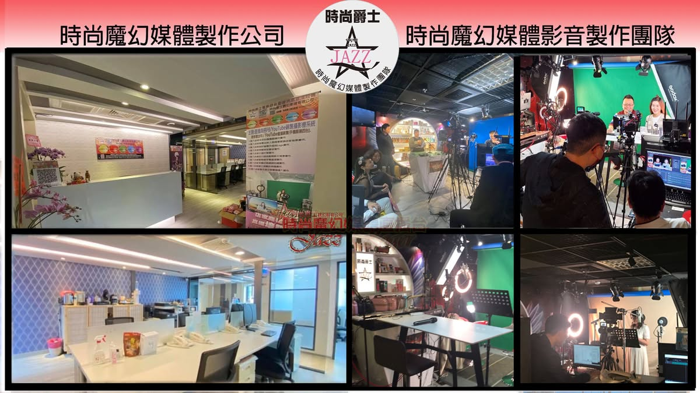
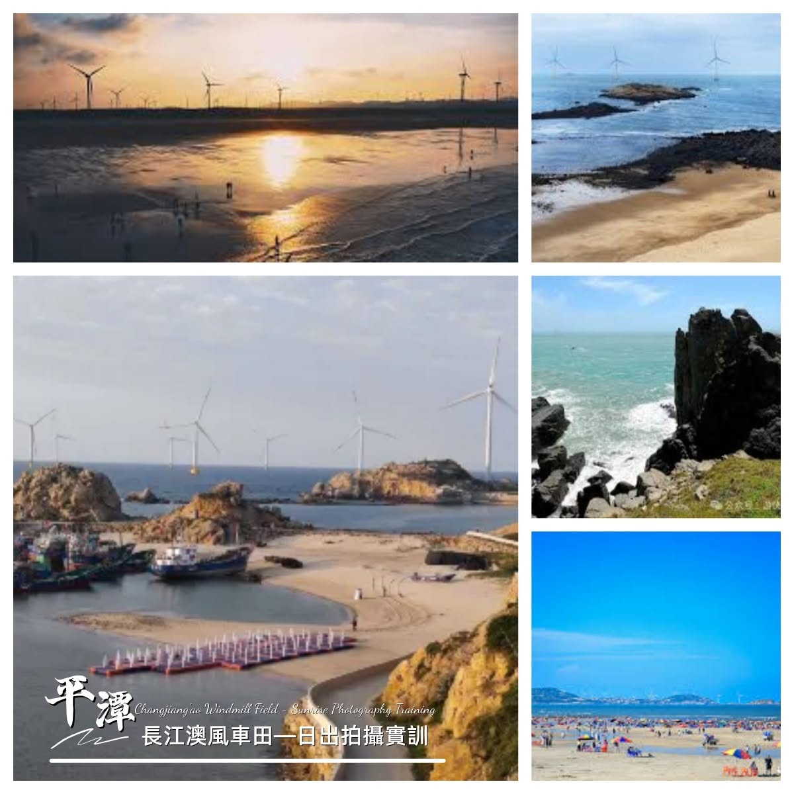
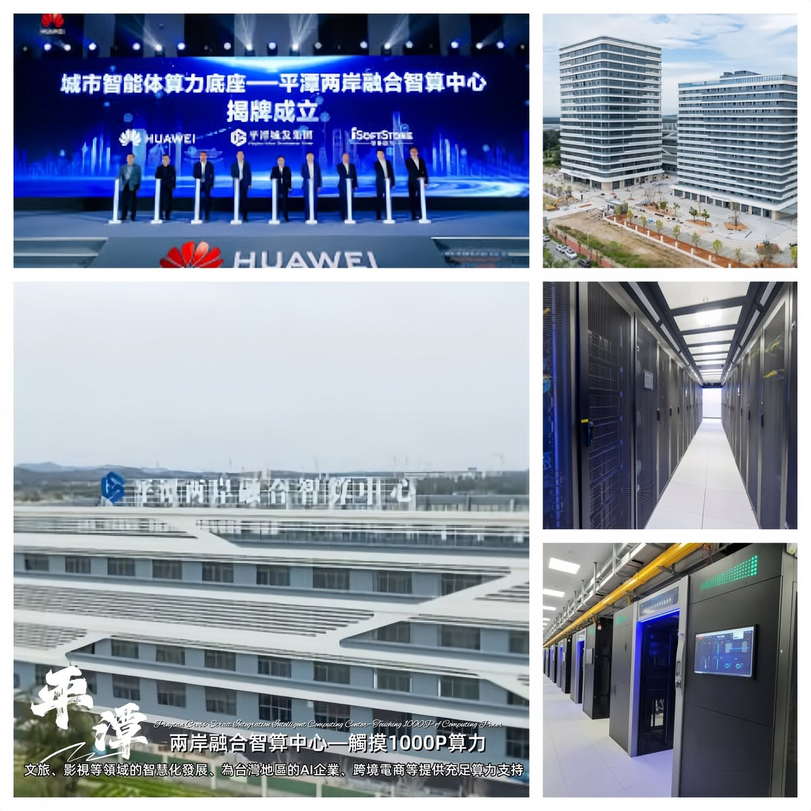
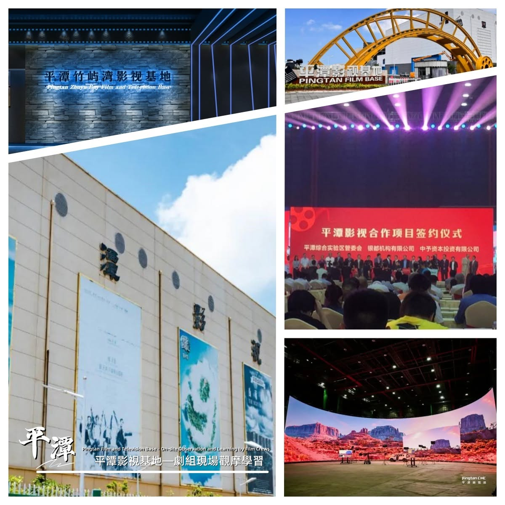
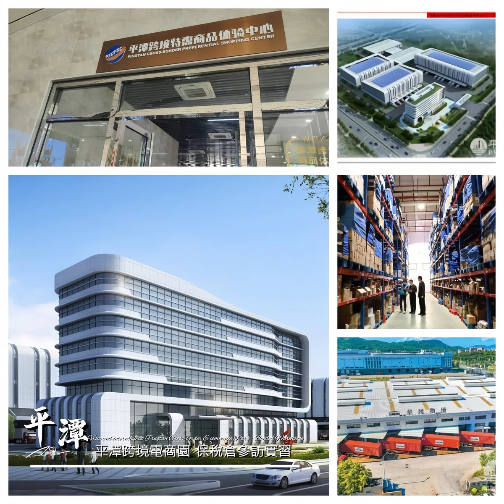
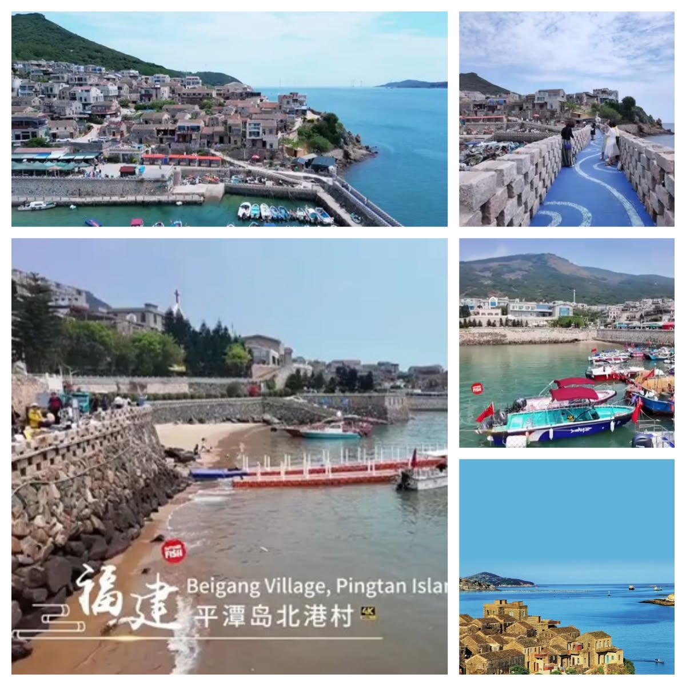
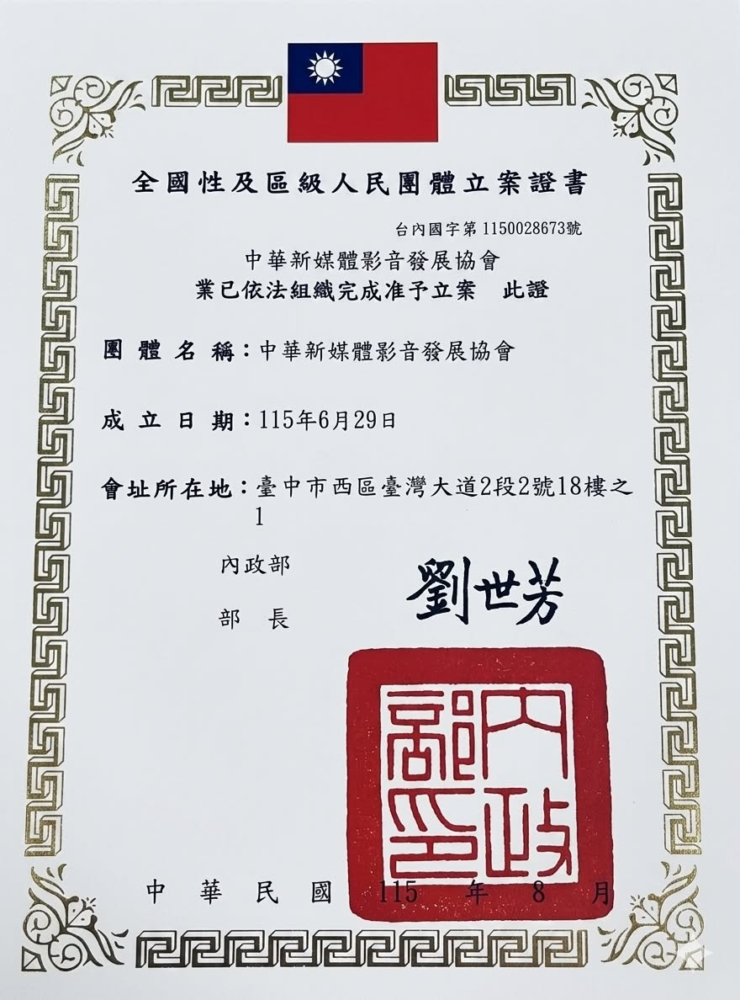

以實務課程、案件媒合與專業師資制度，協助影音與新媒體人才從技能走向職涯。
OUR MISSION · 創會理念人才培育 產業孵化 跨界共創
新媒體不只是曝光工具，而是每個產業重新設計商業模式的機會。協會要做的，是讓人才有舞台、企業有方法、合作有結果。
串聯影音製作、AI 工具、直播與商業資源，為中小企業打造可持續的新媒體能力。
透過論壇、簽約合作、商務交流與兩岸青年資源，讓專業彼此連結、讓專案落地。
五年醞釀，
正式啟動
從新媒體孵化製作團隊，到全方位複合式基地，再到全國性人民團體立案——這是一段把實務經驗組織化、把合作願景制度化的旅程。
深耕實務
投入新媒體孵化與製作服務，逐步整合六大服務面向。
凝聚共同願景
串聯新媒體、演藝經紀與企業專家，形成協會籌備方向。
依法成立
完成全國性及區級人民團體立案，立案字號 1150028673。
啟動大會
授證、論壇、跨界簽約與晚宴，邀請產業夥伴共同見證。
一場大會，
六種連結
不只見證協會正式啟動，更把授證、論壇、簽約、會員資源、商務交流與晚宴安排在同一天，讓相遇有機會變成合作。
嘉賓報到・商務交流
會員商業資源牆，促進跨業交流與私域引流。
揭幕致詞・啟動儀式
創會長分享會員資源願景與 VIP 入會模式。
理監事聘任授證典禮
幹部授證宣示、介紹與理事長就任致詞。
新媒體跨界合作簽約
邀請業界專業人士展開資源合作。
新媒體商業變現論壇
由新媒體變現導師進行商業模式拆解。
大合照・商務聯誼晚宴
精緻台菜與跨桌名片交流，擴大合作網絡。
來賓參加含晚宴酌收 NT$700
已繳會費之協會會員，由協會免費提供。
立即洽詢席次已繳會費之協會會員，由協會免費提供。
加入，不只是
一張會員證
會員得到的是一整年的學習、交流、曝光與合作機會——從課程到案件、從餐會到旅遊，把人脈真正轉化為可持續的成長。
一般會員 · 年度方案
3,600元／年
一次繳交一年會費，享有協會規劃之年度會員回饋，公告參考價值約 NT$60,000。
企業會員：年費 NT$2,000；一次繳交三年會費 NT$6,000。實際內容與資格以協會最新公告為準。
約 12 次專業課程
會員可依需求選擇參與年度免費課程。
至少 2 次會員餐敘
於飯店宴會廳舉辦交流餐會。
至少 1 次會員旅遊
走訪台灣各地景點，深化會員交流。
講師合作機會
符合資格之理監事及專業老師，每次開課 3 小時起。
青年創就業協助
提供台灣及大陸台青基地相關資源協助。
新媒體案件媒合
培育專業人才，安排案件磨合與簽約工作。
入會禮自由選擇 1 項
- 巴布農純淨高級水 1 箱
- 精釀果醋 1 瓶
- 金將卡拉 OK 設備 1 組 8 折
- 美樂家精緻精油 1 瓶
- 企業訪談專業影片 1 支
- 南山意外險保障 1 年
- 豬肉王子豬肉禮盒 1 盒
- 虎克船長檸檬紅茶禮盒 1 盒
- 爆炸豬牌酥脆蔬果禮盒 1 盒
- 時尚爵士直播帶貨免費簽約 1 年
- 新媒體剪映或 AI 影像編輯安裝 1 套
持續在現場，
持續創造連結
從影音製作基地、論壇簽約到產業參訪與大型活動舞台，這些公開影像呈現發起團隊長期累積的媒體實務與跨界行動。







影像整理自時尚爵士數位影音官方公開相簿；活動名稱與說明依公開影像可辨識內容編輯，未臆測未公開之人物身分。
讓會員的專業，
成為被報導的故事
協會不只辦活動，也將影音專業轉化為會員的品牌曝光資源。從人物專訪到活動報導，建立能被看見、被理解、被分享的內容資產。
企業人物專訪
梳理品牌故事與專業價值，製作具識別度的訪談影音內容。
活動影像報導
記錄論壇、簽約、課程與交流現場，形成可持續使用的媒體素材。
直播與短影音
以直播、精華剪輯與短影音，延伸活動影響力與社群觸及。
協會平台露出
透過協會公開平台與會員網絡，促成內容分享及跨界合作機會。
創會長／副理事長
羅爵 Roger
0909-018870 · LINE ID：mrbin7763
0909-018870 · LINE ID：mrbin7763
秘書長
林秘書長
0982-171717 · LINE ID：0982171717
0982-171717 · LINE ID：0982171717
公司電話
04-22013336
週一至週日 10:00—22:00
週一至週日 10:00—22:00